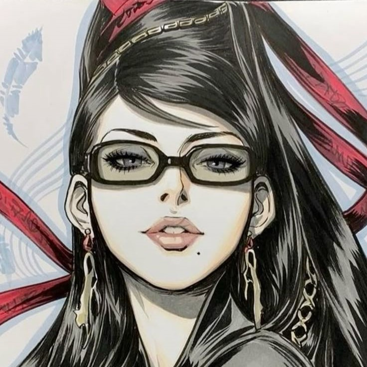
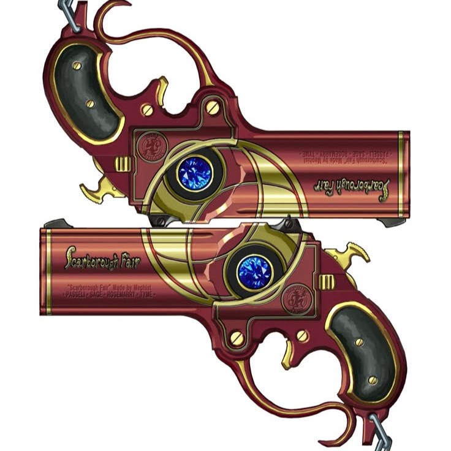

Dakalo Nemamilwe hails from Polokwane, Limpopo, and is studying for a Bachelor of Information Technology with a focus on Networking and Cybersecurity. Her interest in cybersecurity was sparked by the rise in cybercrime across South Africa, and she is determined to help protect individuals and businesses from online threats. Dakalo dreams of working for a global cybersecurity firm and eventually starting her own consultancy to strengthen digital security across the continent.
Dakalo is a chess enthusiast who spends hours playing and studying the game, often participating in local tournaments. She also has a passion for building custom gaming PCs, which combines her technical skills with her love for gaming.

The following lists modules taken in Semester 1 and Semester 2:
| Modules Semester 1 | Modules Semester 2 |
|---|---|
| INF200 | INF250 |
| INL380 | INF270 |
| INF260 | INF350 |